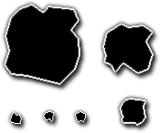
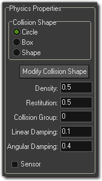
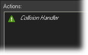
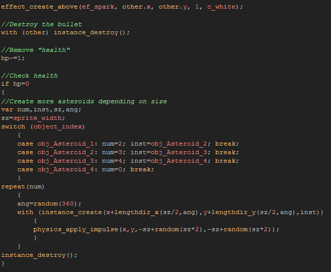

Tutorial
Page 7 of 7
Asteroids
Since it's not much fun flying through an empty room and shooting at nothing, lets create our asteroids. We will use a parent object to make collisions easier, then
some individual asteroid child objects of different sizes. First you need to create some asteroid sprites of different sizes (I suggest 96x96,
64x64, 32x32 and 16x16). The ones I made for the example look like this:

First lets create the parent object. Create a new object and call it "obj_A_Parent". Give it a step event and in that place a call to the script "phy_wrap" so
that all the asteroid objects will wrap the screen too. Once that is done, create four more asteroids, and assign them one of the sprites that we have made for them.
Call them simply "obj_Asteroid_1", "obj_Asteroid_2" etc... For their physical properties, we want to give them a circular shape (no need for a precise shape here) that
approximately fits the size of the sprite, and their properties ahould be as follows:

The asteroids will also need a create event where we can give them a variable to control how much damage they can take before they explode, so add a
create event and in that set a variable "hp" to 5 for the largest, them 3, then 2 and for the smallest 1. Once you have done that open up the parent object
again as we have to add in collision handling now. Add a collision event with "obj_A_Parent" (ie: itself) so that all asteroid objects will bounce off each other.
You do not need to place any actual code in this event, just a comment will do so that the physics knows to test for these collisions.

You also want the player to "bounce off" the asteroids too, so lets copy that event (right click on it and select Duplicate Event), selecting the player object
this time. Finally, we need to add some code for the collision with the player bullet object, so create another, final, collision event with that object and add this code:

Lets quickly step through that code... The first line uses the other (ie: the bullets) x and y positionto create a nice little effect at the point
of collision with the bullet, then we deduct one "hp" and check to see if we are at 0 "hp" or not. If we are at 0, we then check the asteroid that is recieveing the collision
to see what size it is and then generate new asteroids before destroying itself.
If the asteroid creates new ones when destroyed, notice that we use physics_apply_impulse to give it some motion. This is similar to what we used for the
bullet instance to get it moving, only now we are using the the physics world coordinates to calculate the vector of motion and the power, rather than the local coordinates.
So, values of (for example) x=0 and y=-1 would send the instance "up" the screen, or values of x=-1, y=-1 would send the instance to the bottom left of the screen. In this
case we are using the size of the object creating the instances as a random "seed" to generate a vector and so ensure that the new instances move in a random direction.
Save your progress and test the game to see how everything works together now.